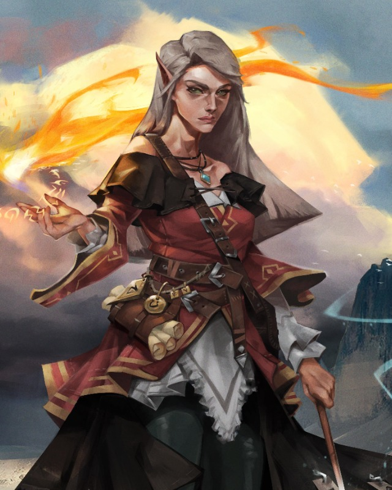

Freya
Sorcerer / mistyczka / interpretatorka znakow
Rozpoznaj, czy zjawy sa prawdziwym zlem, czy mechanizmem przysiegi. Nie niszcz klatwy, zanim zrozumiesz jej zasade.
OccultismArcanaDeceptionIntimidation
Skille
- Occultism: znaki, popielne wspomnienia, nietypowa magia.
- Arcana: rytual Miry, kreg w ruinach, struktura zaklecia.
- Deception: blef przy ludziach Odrana.
- Intimidation: nacisk na Odrana.
Umiejetnosci
- Dangerous Sorcery: wieksza presja przy czarach ofensywnych.
- Oddity Identification: badaj relikwiarz i osobliwosci.
- Familiar: zwiad, drobne obserwacje, bezpieczne badanie.
- Widzenie w polmroku: ruiny i krypta.
Taktyka
- Trzymaj dystans i nie wchodz na podejrzane pola.
- Chron Korda i Cedrica kontrola albo obrazeniami z dystansu.
- Pytaj, czy cel wyglada jak zywy, duchowy albo magiczny.
- Zachowaj zasoby na krypte.
Sledztwo
- W kaplicy pytaj, dlaczego ogien zaczal sie przy oltarzu.
- W ruinach negocjuj z Mira.
- W krypcie wspieraj pokojowe zakonczenie dowodami.
- Lacz dowody z kaplicy, mlyna i popielnego kregu.
Pytania do NPC
- Do Odrana: "Skad wiesz, ze to klatwa, a nie przysiega?"
- Do Miry: "Co sie stanie, jesli rytual zostanie przerwany?"
- Do Serai: "Jaki dowod wystarczy, zeby oszczedzic wioske?"
Motywacja: Freya wyczuwa, ze duchy nie sa chaotyczne. Chce poznac zasade klatwy.